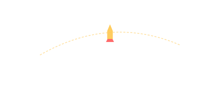

Goddard's First Liquid-Fuel Rocket · 1926
March 16, 1926: a 3-meter spindly contraption rises 12 meters into the Massachusetts sky. The first liquid-fuel rocket flight in history.

101 · zoom in
Robert Goddard was a physics professor at Clark University in Worcester, Massachusetts, with a 1919 Smithsonian paper proposing rockets could reach the Moon — for which the New York Times mocked him in a 1920 editorial that claimed he didn't even understand high-school physics. (The Times retracted in 1969, three days after Apollo 11 launched.)
On a snowy March 16, 1926, on his Aunt Marion's farm in Auburn, Goddard launched a 4.4-pound, 10-foot rocket fueled by liquid oxygen and gasoline. It flew for 2.5 seconds, reached 41 feet altitude, and crashed in the cabbage field 184 feet downrange. His wife Esther Goddard photographed it. That short hop is the start of every modern rocket lineage.
Goddard was secretive — paranoid about competitors, refused most collaboration. His patents covered fundamentally everything: gimbaled engines, pumps, gyroscopic guidance, multi-stage configurations. Postwar Germans had read his patents; postwar Americans had to relearn most of his work because he hadn't shared it.
March 16, 1926 launch site: Aunt Marion Goddard's farm, Auburn, Massachusetts. Vehicle: "Nell" — 10 ft tall, ~3 m long structure, weighing about 6 kg dry. Propellants: liquid oxygen + gasoline, regeneratively cooled, gimbaled nozzle.
Earlier solid-fuel rockets existed (Chinese fire-arrows from the 13th century onward, Congreve rockets in the Napoleonic wars), but liquid fuels were the door to spaceflight: higher specific impulse, controllable throttling, restartable.
Esther Goddard took most of the photographs. Her work is undercredited in standard histories — the iconic 1926 launch image is hers.
Goddard's later flights from Roswell, New Mexico (1930-1941), reached 1.7 mi altitude (Mar 1937) and 9000 ft (1941). Modest by modern standards but every key technology — gimbaling, pumps, gyros, parachute recovery — proved out on Goddard's hardware decades before mass-produced rocketry caught up.
Postwar acknowledgment: NASA's Goddard Space Flight Center in Maryland (1959) is named for him.
SEE IN THE APP
- /missions Every liquid-fuel rocket in the catalogue traces its lineage to Goddard's 1926 flight